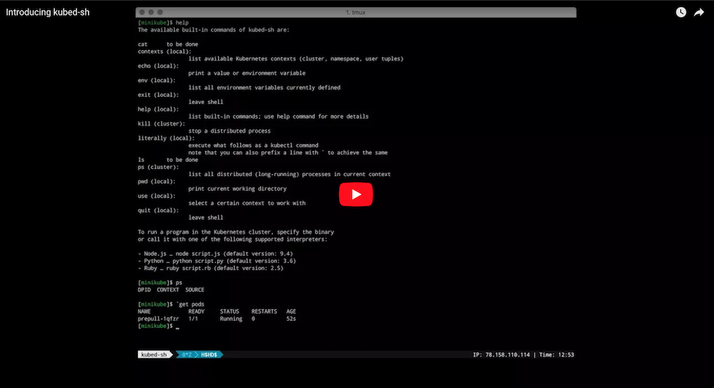
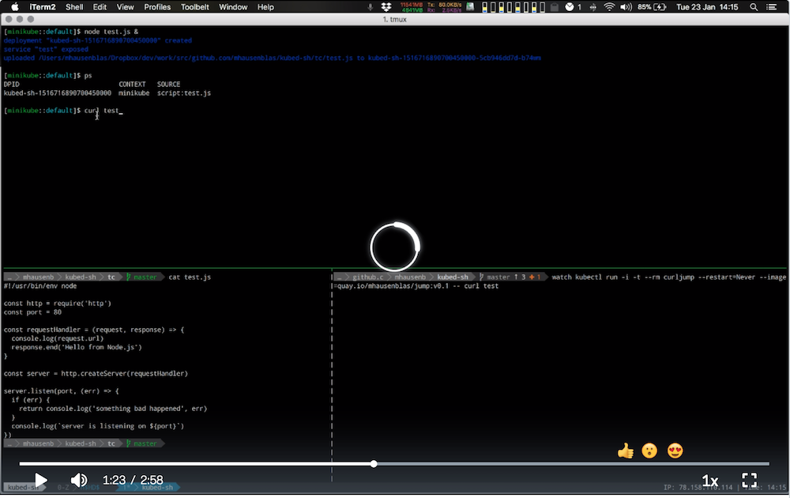

Home


Welcome to kubed-sh, the Kubernetes distributed shell for the casual cluster user.
In a nutshell, kubed-sh lets you execute a program in a Kubernetes cluster
without having to create a container image or learn new concepts.
For example, let's say you have a Node.js script called test.js
and you want to launch it as a containerized app in your Kubernetes cluster,
here's what you'd need to do in kubed-sh:
1 2 3 4 | [kind::default]$ node test.js & [kind::default]$ ps DPID SOURCE URL kubed-sh-1517679562543558000 test.js test |
Does this look familiar to what you do in your 'local' shell? That's the point of kubed-sh :)
|  |  |
|---|---|
| Introducing kubed-sh (5 min) | kubed-sh hot-reload feature demo (3 min) |
In addition to launching (Linux ELF) binaries directly, the following interpreted environments are currently supported:
- When you enter
node script.js, a Node.js (default version: 12) environment is provided andscript.jsis executed. - When you enter
python script.py, a Python (default version: 3.6) environment is provided and thescript.pyis executed. - When you enter
ruby script.rb, a Ruby (default version: 2.5) environment is provided and thescript.rbis executed.
Note that kubed-sh is a proper shell environment. This means you can expect
features such as auto-complete of built-in commands,
history operations (CTRL+R), or clearing the screen (CTRL+L) to work as per usual.